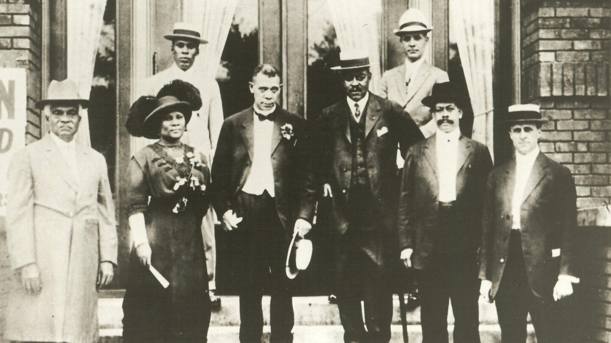

One of the first American women to become a self-made millionaire.

Madam C.J. Walker,second from the left,was best known for her successful hair care business, she was
also a passionate activist who used her power to raise political consciousness about equal rights for
African-Americans.
Here's a time line of Madam C.J Walker's life:
Born Sarah Breedlove on a plantation in
Delta,Louisiana, one of six children of Owen and Minerva Anderson Breedlove,former slaves-turned
sharecroppers after the Civil War.Orphaned at age seven, Walker lived with her older sister Louvenia, and
the two worked in the cotton fields.
Partly to escape her abusive brother-in-law, at age 14
Walker married Moses McWilliams.
When her husband died in 1887, Walker became a single parent of two-year old daughter Lelia (later known as
A’Lelia).
She married John Davis, but the marriage was troubled,
and the couple later divorced,Struggling financially, facing hair loss, and feeling the strain of years of
physical labor, Walker’s life took a dramatic turn.
That year, she not only began using African American
business woman Annie Turbo Malone’s The Great Wonderful Hair Grower,but she also joined Malone’s team of
black women sales agents.
Walker moved to Denver, Colorado, where she married
ad-man Charles Joseph Walker,renamed herself “Madam C.J. Walker,” and with $1.25, launched her own line of
hair products and straighteners for African American women,“Madam Walker’s Wonderful Hair Grower.”
After the pair divorced,she relocated to Indianapolis
and built a factory for her Walker Manufacturing Company. Ultimately, Walker employed 40,000 African
American women and men in the US, Central America, and the Caribbean.
She also founded the National Negro Cosmetics
Manufacturers Association. Walker’s business grew rapidly, with sales exceeding $500,000 in the final year
of her life. Her total worth topped $1 million dollars, and included a mansion in Irvington, New York
dubbed “Villa Lewaro;” and properties in Harlem, Chicago, Pittsburgh, and St. Louis. she became active
in the anti-lynching movement, donating $5,000 to the NAACP’s efforts. Just prior to dying of kidney
failure, Walker revised her will, bequeathing two-thirds of future net profits to charity, as well as
thousands of dollars to various individuals and schools.
Walker died of hypertension on , at age 51, at Villa Lewaro.
I
had to make my own living and my own opportunity. But I made it! Don’t sit down and wait for the
opportunities to come. Get up and make them.—Madam C.J. Walker